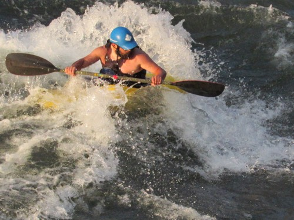

White Water Rafting
White water rafting is a thrilling recreational water sport where an inflatable raft carries 4 to 8 people down white water rapids on a river. It's considered an adventure sport with varying levels of difficulty. Typically, an experienced rafting guide accompanies beginners. Rafting is an adventurous and thrilling experience that provides interesting scenery while challenging your physical abilities. It's a great way to spend time with friends or family, enjoying the natural beauty of rivers and lakes together. It's a great way to spend time with friends or family, enjoying the natural beauty of rivers and lakes together. It's an excellent workout that helps improve cardiovascular health, muscular conditioning, balance, coordination, stamina, and endurance. It's an excellent workout that helps improve cardiovascular health, muscular conditioning, balance, coordination, stamina, and endurance. The soul of rafting is an exhilarating adventure that push people behind their limits.


History
White Water Rafting Company was founded in 1995 by outdoor enthusiasts and river rafting experts, Blest and Oluchi Ukachukwu. Driven by their passion for adventure and a love for nature, the Ukachukwus set out to create a rafting company that offered more than just thrilling rides—they aimed to provide transformative experiences that fostered a deep connection with the great outdoors. In its early years, Best Way Rafting started with a single raft and a handful of enthusiastic guides, operating on the scenic and challenging rapids of the Colorado River. The company's commitment to safety, exceptional customer service, and respect for the environment quickly earned it a loyal customer base and a stellar reputation.



As demand grew, the company expanded its operations to include several other premier rafting locations across the United States, such as the Salmon River in Idaho, the Gauley River in West Virginia, and the Rogue River in Oregon. Each new location was carefully selected for its natural beauty, diverse wildlife, and the unique challenges it offered to rafters of all skill levels. By the early 2000s, Best Way Rafting had become known not just for its exhilarating adventures but also for its educational and conservation efforts. The company introduced eco-friendly practices and programs aimed at educating guests about the importance of preserving the rivers and surrounding ecosystems. This commitment to sustainability helped solidify Best Way Rafting's reputation as a responsible and forward-thinking adventure company. Throughout the 2010s, Best Way Rafting continued to innovate and improve, introducing state-of-the-art rafting equipment, comprehensive safety protocols, and specialized training programs for guides. These efforts ensured that the company remained at the forefront of the industry, offering unparalleled experiences that balanced excitement with safety and environmental consciousness. Today, Best Way Rafting Company is a leader in the outdoor adventure industry, known for its high standards, exceptional guides, and a deep-rooted commitment to the environment. With over two decades of experience, the company continues to inspire adventurers of all ages to explore and appreciate the natural world, one rapid at a time.
Adventure Awaits You!